Salt Spring Island Adventures
June 11, 2025
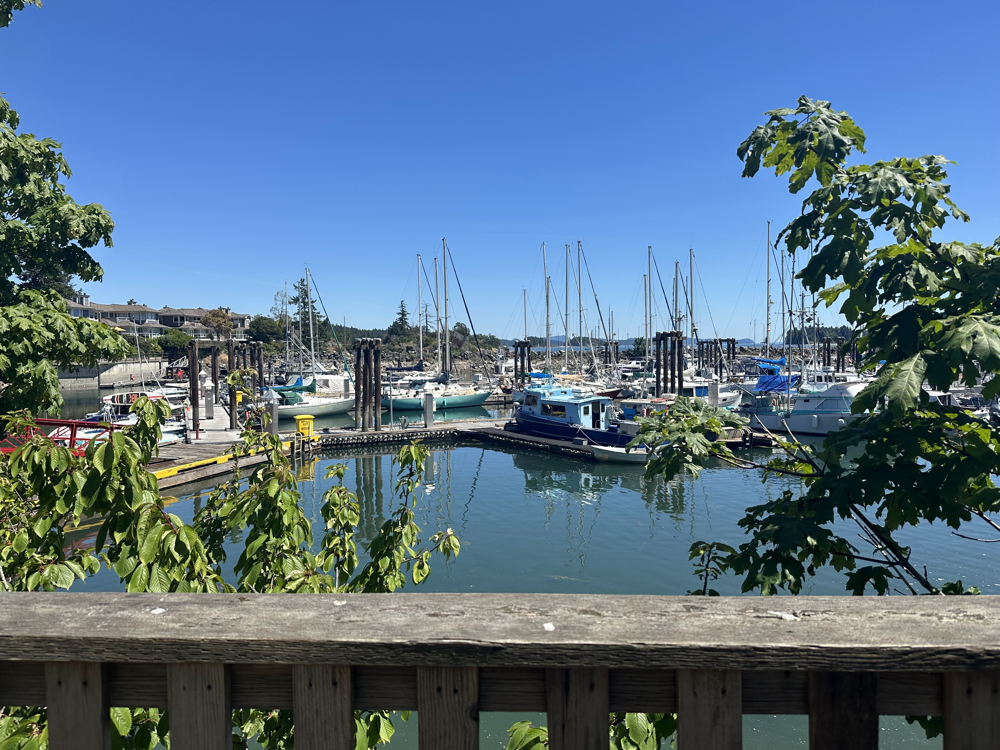
Ganges Harbour on Salt Spring Island.
We spent our first wedding anniversary on Salt Spring Island, one of the Gulf Islands between Vancouver and Victoria. We had such a great time exploring the island and chatting with all the locals. There is such a strong sense of community on the island and it was very nice to experience it all.
tl;dr
Food and Drinks
- The Coffee Can - For a quick cold brew
- Switchboard Cafe - For a local cafe experience
- The Feast - For a nice dinner with ingredients from the island
- Wild Cider - For a selection of ciders and great food
- Black Sheep Books - For a good read
- Salt Spring Island Cheese Company - For a goat milk gelato (it's very good)
- Lavender and Black - For lavender everything
- Ruckle Provincial Park - For a short hike along the coast
- Mount Maxwell Provincial Park - For a fun hike with beautiful views
- Salt Spring Island Market - For the quintessential Salt Spring experience
Day 1
We started our trip bright and early from Tsawwassen and grabbed breakfast while waiting at the ferry terminal. The ferry ride isn't very interesting to us, having taking the route many times before to Victoria. However, this ferry is definitely smaller so the waves were much more noticeable and made me feel a bit nauseous. The ride is also super long because of all the stops it makes at the other islands, with Salt Spring Island being the last stop. Nevertheless, it was interesting to watch the workers unload and load the ferry at each stop, since they have to coordinate the direction of all the cars to make sure they can drive off at the right stop. We also spent some time reading through the tourism booklets on the ferry and planned out our stops for the trip.
We eventually made it to the island in the early afternoon and stopped by the town to explore a bit before checking in to our bed and breakfast. There isn't a lot to do in Ganges, with only a few shops to browse, especially with limited opening hours on the island. We grabbed coffee from The Coffee Can, which operates out of a cube container, and spent some time browsing through Black Sheep Books, a local second hand bookstore. We found some books to read during the trip and also found a fun local children's book that we bought for a friend's baby shower. Once it was time to check in, we headed to our bed and breakfast.
We stayed at Above the Narrows bed and breakfast on this trip, which was such an amazing place! The hosts, Joe and Dianne, were super nice and friendly and had such great recommendations for us. I was originally turned off by the single room accommodation in a bed and breakfast setting, thinking that we would be sharing the space and lacking privacy. However, I was pleasantly surprised to find that the room actually has its own separate entrance, making it no different from a hotel room. Better yet, it's in a newly built house with the most amazing view of the water right from our room. Plus, because it's a traditional bed and breakfast, we got fresh home cooked breakfast every morning that tasted delicious! I highly recommend this experience over any Airbnb or hotel.
The first day was very hot, so we stayed in our air-conditioned room for a bit to cool down before heading out for dinner. Joe recommended Wild Cider, which we didn't know had a restaurant attached to it. We had a great time there in their outdoor seating area with a gorgeous view of the apple orchard. The food was very good and a reasonable portion size that we could finish without feeling too full. We also tried a flight of their ciders and my favourite was the ginger root cider, which is basically an alcoholic ginger beer. It was so good that we bought some bottles to take home.
We ended the day by checking out the local tennis courts. There were several courts and we were the only ones there. The temperature cooled in the evening and we got to practice for a bit while enjoying the sunset.
We eventually made it to the island in the early afternoon and stopped by the town to explore a bit before checking in to our bed and breakfast. There isn't a lot to do in Ganges, with only a few shops to browse, especially with limited opening hours on the island. We grabbed coffee from The Coffee Can, which operates out of a cube container, and spent some time browsing through Black Sheep Books, a local second hand bookstore. We found some books to read during the trip and also found a fun local children's book that we bought for a friend's baby shower. Once it was time to check in, we headed to our bed and breakfast.
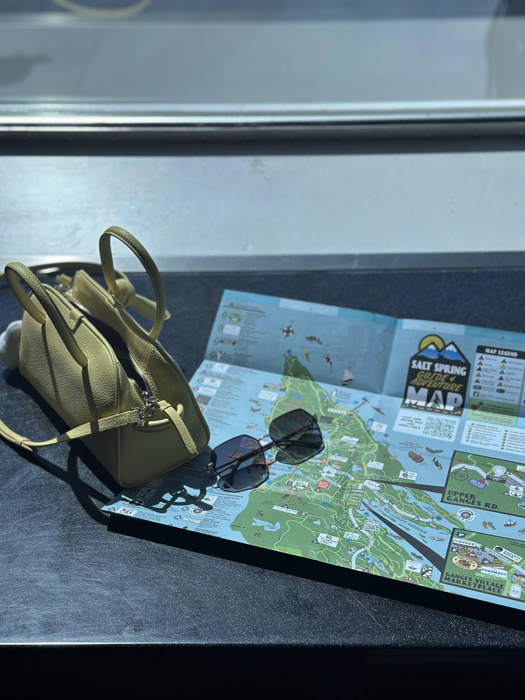
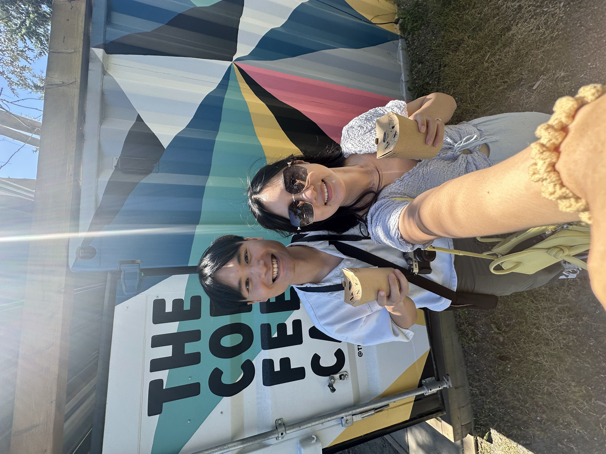
Planning the trip and visiting The Coffee Can.
We stayed at Above the Narrows bed and breakfast on this trip, which was such an amazing place! The hosts, Joe and Dianne, were super nice and friendly and had such great recommendations for us. I was originally turned off by the single room accommodation in a bed and breakfast setting, thinking that we would be sharing the space and lacking privacy. However, I was pleasantly surprised to find that the room actually has its own separate entrance, making it no different from a hotel room. Better yet, it's in a newly built house with the most amazing view of the water right from our room. Plus, because it's a traditional bed and breakfast, we got fresh home cooked breakfast every morning that tasted delicious! I highly recommend this experience over any Airbnb or hotel.
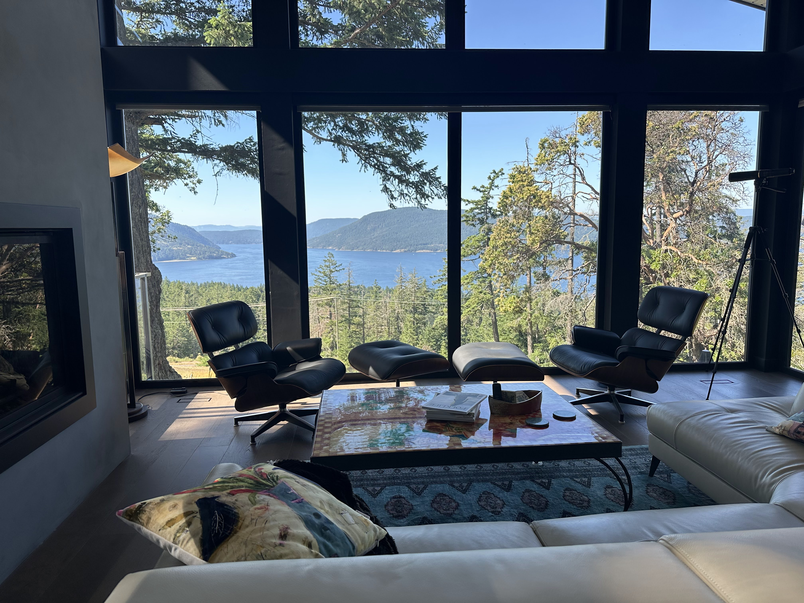
Bed and breakfast.
The first day was very hot, so we stayed in our air-conditioned room for a bit to cool down before heading out for dinner. Joe recommended Wild Cider, which we didn't know had a restaurant attached to it. We had a great time there in their outdoor seating area with a gorgeous view of the apple orchard. The food was very good and a reasonable portion size that we could finish without feeling too full. We also tried a flight of their ciders and my favourite was the ginger root cider, which is basically an alcoholic ginger beer. It was so good that we bought some bottles to take home.
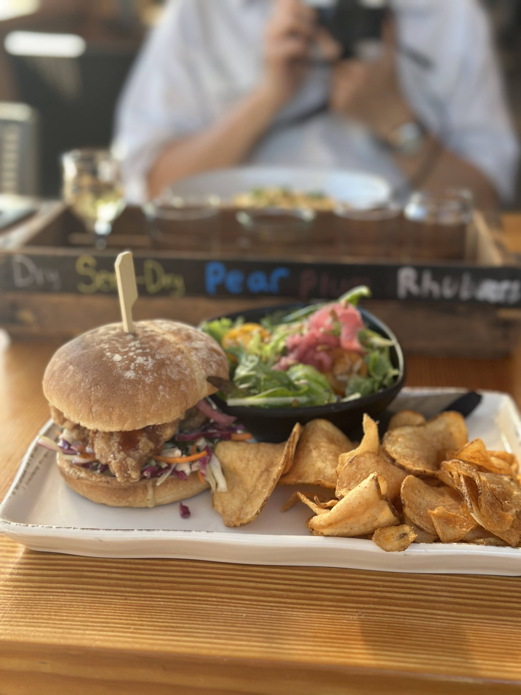
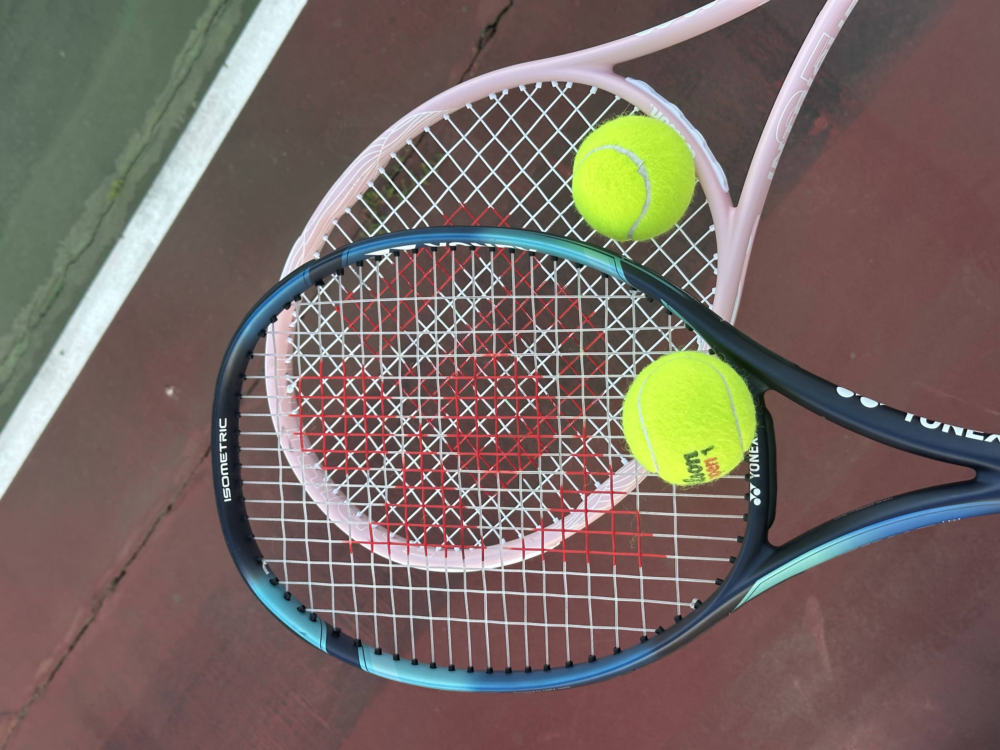
Outdoor seating at Wild Cider and tennis.
We ended the day by checking out the local tennis courts. There were several courts and we were the only ones there. The temperature cooled in the evening and we got to practice for a bit while enjoying the sunset.
Day 2
The next day, we were served eggs benedict with local Salt Spring eggs, with a nice selection of fruits and coffee to enjoy in the backyard. After breakfast, we headed out to explore the island. We planned to check out Salt Spring Island Cheese Company and pick up some cheese that we can enjoy as a snack on the hike we planned for later in the day. The cheese farm is located in the southern part of the island and it was quite an idyllic drive. Unfortunately, there was some construction on the road near Ganges, so the traffic was a bit slow, but it was all worth it once we arrived. They have walkways through the pens where the goats are kept and windows into their cheese making room. It took us a while to find the goats, but it seems like they were all hiding under the shed to escape the heat. We picked up some lemon goat cheese from their store after sampling a few different flavours. We also got to try their goat milk gelato, which was surprisingly good! The texture and creaminess seem to fall right in between regular gelato and ice cream, and the flavour was very refreshing. We got a kids scoop and shared it while watching the goats.
Since we were already at the south end of the island, we stopped by Ruckle Provincial Park. There was a nice small loop that goes along the coast and we got to stare out to the ocean for a bit. We even encountered a deer on the trail! There seems to be deer all over the island and apparently June is fawn season and we got to see several babies during our trip.
After the short hike, we finally made our way to Mount Maxwell Provincial Park for our long hike. The trail head starts from a cul-de-sac and there's only roadside parking. Another couple arrived around the same time as us and gave us helpful directions to follow trail #4. All the trails on the island seem to be labelled with numbers, which is super helpful for staying on the right path. The trail itself was very well marked and maintained, only with some overgrown vegetation because there are so few hikers. The hike was steep but short and within an hour, we made it to the top. There were a couple of cars that made it up the mountain, but we heard the road is in rough conditions and not safe for most vehicles. The view from the top was absolutely stunning! We could see an 180 degree view of the ocean and all the surrounding islands. We took a long break at the top to enjoy the view and have our cheese snack on the picnic tables. The outhouse at the top was also very clean and well maintained, which is super appreciated. Mostly, we were just so happy to enjoy the view all by ourselves without any other hikers around, which is nearly impossible anywhere else.
Our last stop of the day was the Lavender and Black lavender farm. We really wanted to see the lavender fields and only one farm was open on the days that we were on the island. We almost didn't make it in time because they close at 4PM and were all the way on the other side of the island. We got there just before closing, but luckily, the owners were very nice and didn't mind that we were there. They explained a bit about their farm and let us explore the fields. We read in the guidebooks that they have lavender ice cream, so we bought a cup to share as we walked through the lavender fields. It was the best lavender ice cream I've ever had! The flavour was super strong, without being overpowering and soapy, which is so much better than the usual lavender ice cream that really just tastes like vanilla with a hint of flavouring. The farm also has a small shop that we browsed before leaving. The owner was so friendly and taught us so much about lavender. We learned about English versus French versus Spanish lavender and she helped us figure out which one would be best for our garden. She also taught us how to use the food grade lavender in our food, which we're super excited to try. Unfortunately, they don't sell any lavender plants, but she gave us recommendations for a local nursery that does. We were definitely there past closing time, but she still took the time to chat with us and answer all our questions.
Because we overstayed at the lavender farm, we had to rush to get ready for dinner. We made a reservation at The Feast, which is a farm to table experience that only uses local ingredients in their menu. We arrived a bit late, but they were just opening. The restaurant is such a cute little place and I really like the concept. However, the experience was a bit underwhelming compared to how they advertised and marketed themselves. Perhaps it's the city life influencing my expectations, but all the descriptions made the place sound like a high-end Michelin star restaurant, but it was really just a nice local restaurant. Nevertheless, definitely make reservations if you want to go because they are very popular on the island and are often fully booked. Their menu is actually quite extensive considering they only use local ingredients, and we ended up ordering a beef brisket. They have a very nice concept that serves family style plates that can be shared between 2-4 people and takes away the stress of having to choose multiple dishes yourselves. The food was indeed incredible and the portion was very large for just the two of us, but we still managed to finish it all. Overall, it was a fun experience, just not quite what I originally expected.
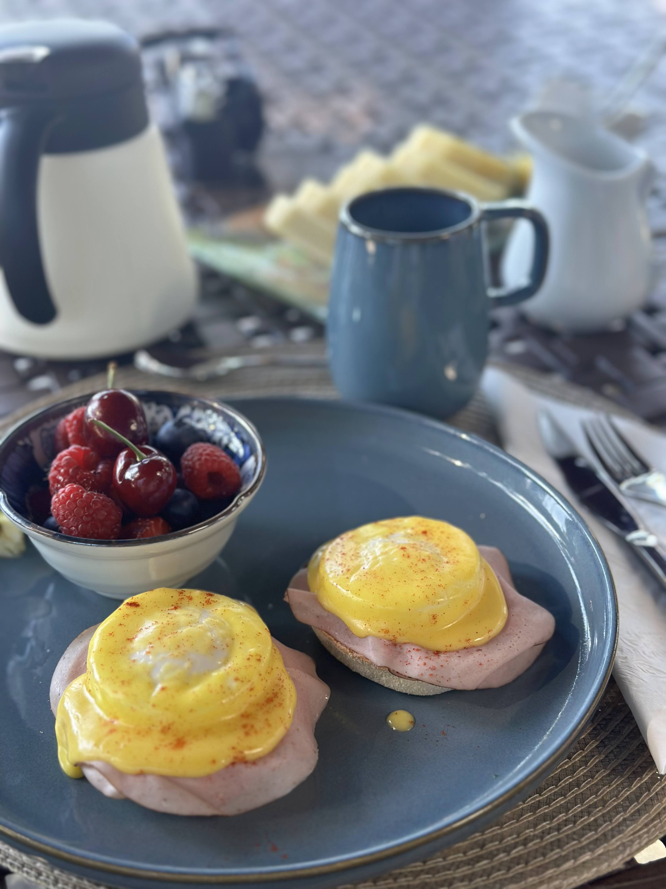
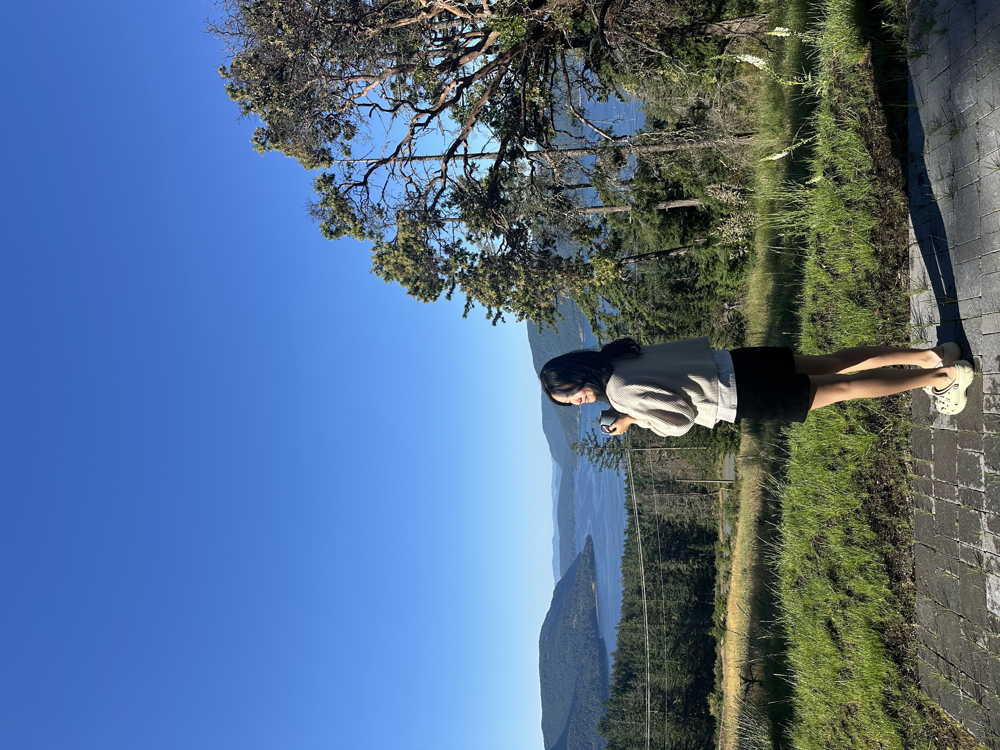
Breakfast and coffee.
Since we were already at the south end of the island, we stopped by Ruckle Provincial Park. There was a nice small loop that goes along the coast and we got to stare out to the ocean for a bit. We even encountered a deer on the trail! There seems to be deer all over the island and apparently June is fawn season and we got to see several babies during our trip.
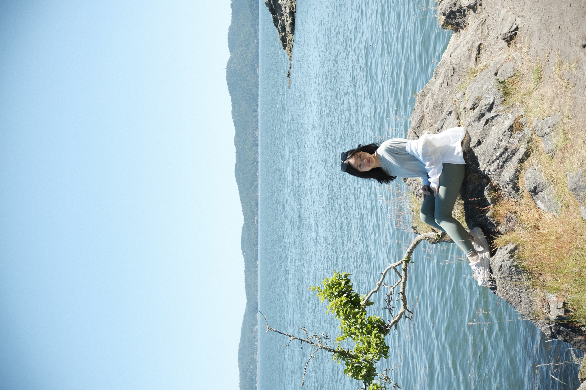

Ruckle Provincial Park.
After the short hike, we finally made our way to Mount Maxwell Provincial Park for our long hike. The trail head starts from a cul-de-sac and there's only roadside parking. Another couple arrived around the same time as us and gave us helpful directions to follow trail #4. All the trails on the island seem to be labelled with numbers, which is super helpful for staying on the right path. The trail itself was very well marked and maintained, only with some overgrown vegetation because there are so few hikers. The hike was steep but short and within an hour, we made it to the top. There were a couple of cars that made it up the mountain, but we heard the road is in rough conditions and not safe for most vehicles. The view from the top was absolutely stunning! We could see an 180 degree view of the ocean and all the surrounding islands. We took a long break at the top to enjoy the view and have our cheese snack on the picnic tables. The outhouse at the top was also very clean and well maintained, which is super appreciated. Mostly, we were just so happy to enjoy the view all by ourselves without any other hikers around, which is nearly impossible anywhere else.
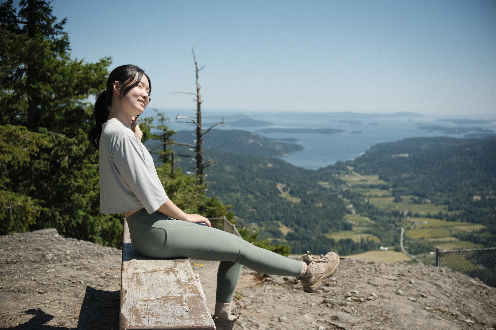
View from the top of Mount Maxwell.
Our last stop of the day was the Lavender and Black lavender farm. We really wanted to see the lavender fields and only one farm was open on the days that we were on the island. We almost didn't make it in time because they close at 4PM and were all the way on the other side of the island. We got there just before closing, but luckily, the owners were very nice and didn't mind that we were there. They explained a bit about their farm and let us explore the fields. We read in the guidebooks that they have lavender ice cream, so we bought a cup to share as we walked through the lavender fields. It was the best lavender ice cream I've ever had! The flavour was super strong, without being overpowering and soapy, which is so much better than the usual lavender ice cream that really just tastes like vanilla with a hint of flavouring. The farm also has a small shop that we browsed before leaving. The owner was so friendly and taught us so much about lavender. We learned about English versus French versus Spanish lavender and she helped us figure out which one would be best for our garden. She also taught us how to use the food grade lavender in our food, which we're super excited to try. Unfortunately, they don't sell any lavender plants, but she gave us recommendations for a local nursery that does. We were definitely there past closing time, but she still took the time to chat with us and answer all our questions.
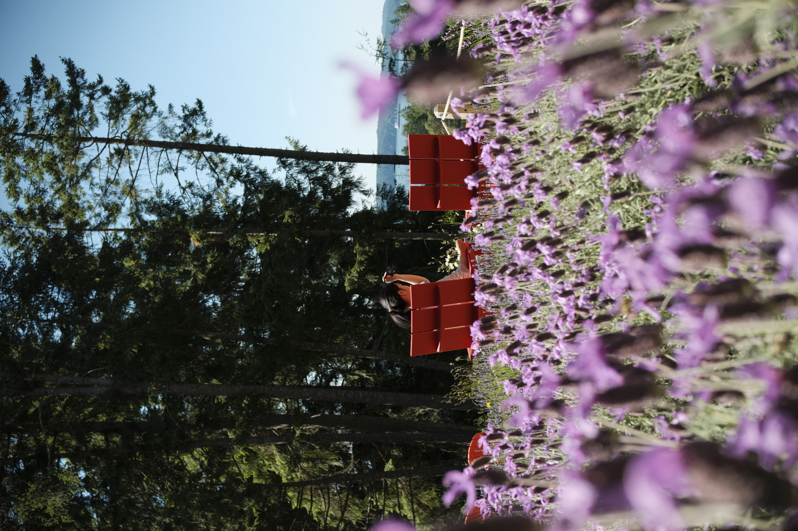
Lavender and Black lavender farm.
Because we overstayed at the lavender farm, we had to rush to get ready for dinner. We made a reservation at The Feast, which is a farm to table experience that only uses local ingredients in their menu. We arrived a bit late, but they were just opening. The restaurant is such a cute little place and I really like the concept. However, the experience was a bit underwhelming compared to how they advertised and marketed themselves. Perhaps it's the city life influencing my expectations, but all the descriptions made the place sound like a high-end Michelin star restaurant, but it was really just a nice local restaurant. Nevertheless, definitely make reservations if you want to go because they are very popular on the island and are often fully booked. Their menu is actually quite extensive considering they only use local ingredients, and we ended up ordering a beef brisket. They have a very nice concept that serves family style plates that can be shared between 2-4 people and takes away the stress of having to choose multiple dishes yourselves. The food was indeed incredible and the portion was very large for just the two of us, but we still managed to finish it all. Overall, it was a fun experience, just not quite what I originally expected.
Day 3
On our last day, we took a stroll along Channel Ridge first thing in the morning. The trail was very close to where we were staying and it was a nice way to start the day. After the walk, we enjoyed our morning coffee with the breathtaking view and our breakfast crepes that Joe had prepared for us.
After breakfast, we headed off to Fraser's Thimble Farm plant nursery that was recommended to us. They had such an amazing selection of plants and we ended up buying several plants for our garden. The owner was super knowledgeable and helped us pick our plants. The farm is also at the north end of the island, so we got to see the side of the island that we hadn't explored yet. We drove by the water and made some stops along the way to enjoy the ocean view. We also tried to stop by some farm stands in hopes of finding some fresh eggs, but did not have any luck. Finally, we made our way to South End Sausage to pick up some local food and then to Ganges for the Tuesday Market.
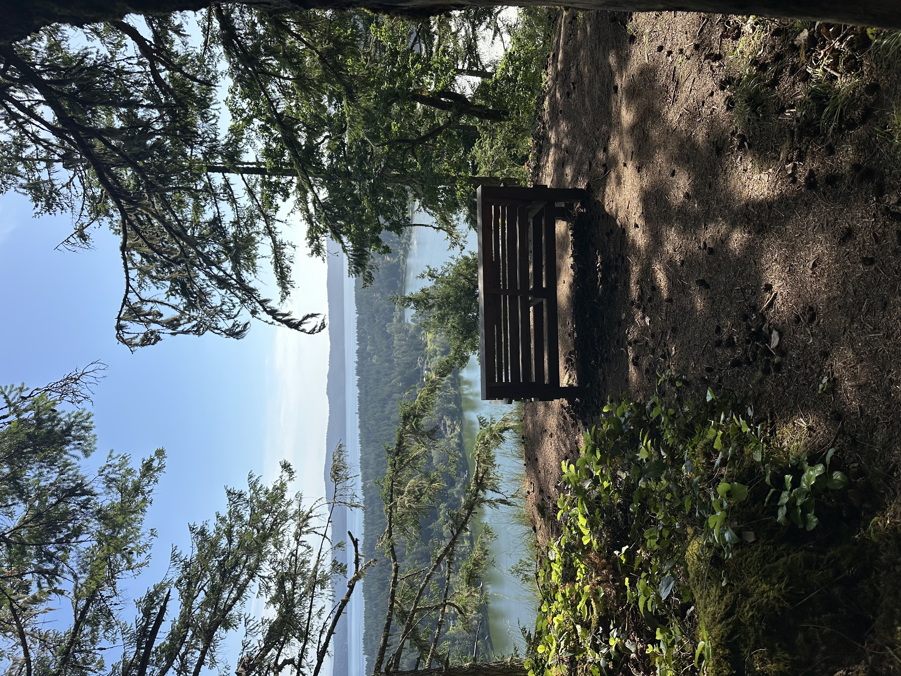
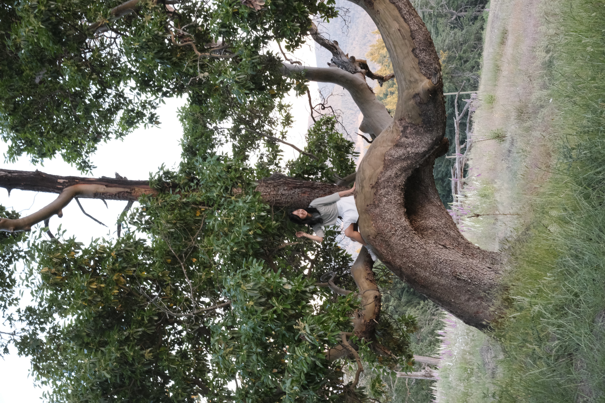
Channel ridge.
After breakfast, we headed off to Fraser's Thimble Farm plant nursery that was recommended to us. They had such an amazing selection of plants and we ended up buying several plants for our garden. The owner was super knowledgeable and helped us pick our plants. The farm is also at the north end of the island, so we got to see the side of the island that we hadn't explored yet. We drove by the water and made some stops along the way to enjoy the ocean view. We also tried to stop by some farm stands in hopes of finding some fresh eggs, but did not have any luck. Finally, we made our way to South End Sausage to pick up some local food and then to Ganges for the Tuesday Market.
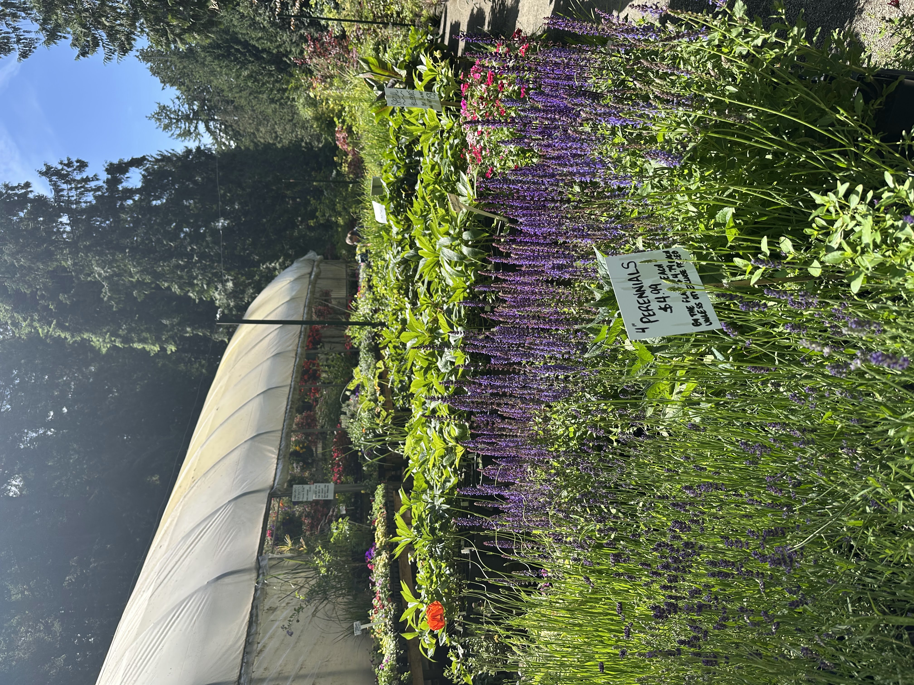
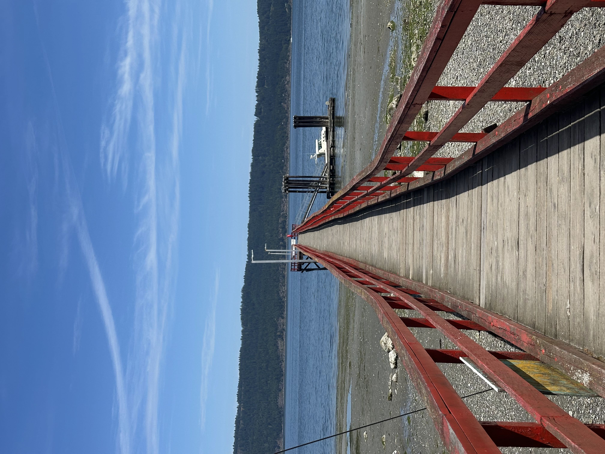
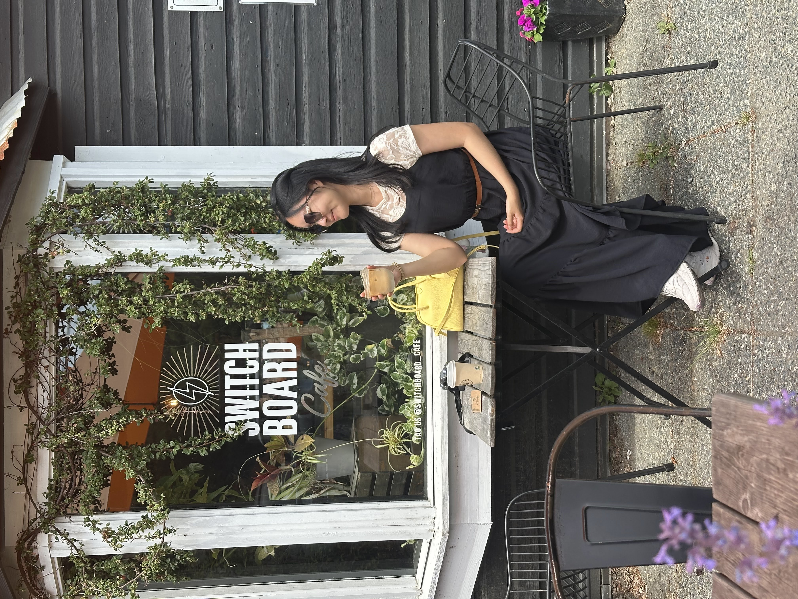
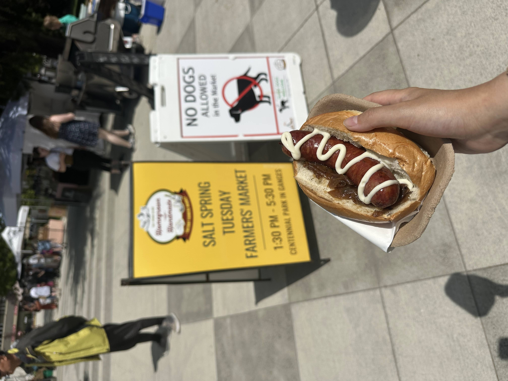
Day 3 stops: Fraser's Thimble, Fernwood Point Beach, Switchboard Cafe, and Tuesday Market
We had some time to kill before the market opened, so we stopped by Switchboard Cafe for a nice iced coffee. The cafe is super pretty with a beautiful garden in their outdoor seating area. We enjoyed our coffee until it was time for the market. The Tuesday Market is mostly fresh produce and food items unlike the larger Saturday Market that features more artisans. Luckily, the market had fresh eggs so we were able to buy some to take home. We also got to enjoy a nice hot dog. By this point, the weather was very hot again and we were tired from all our adventures, so we headed to the ferry terminal early. The views from the ferry terminal were also stunning so it was nice to relax there for a bit as the end of our trip.
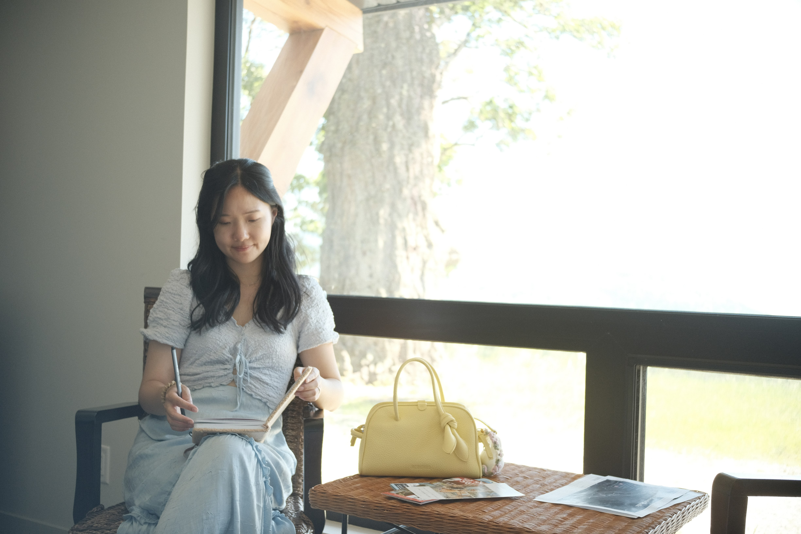
The Arbutus room at Above the Narrows.